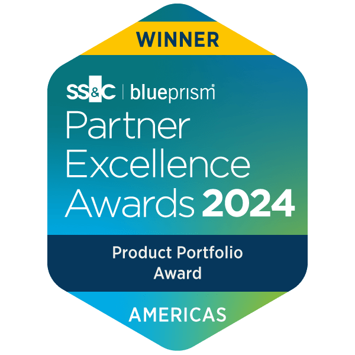
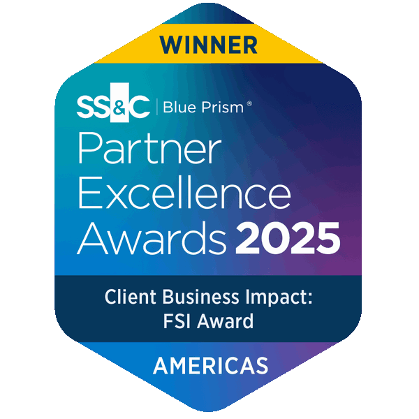
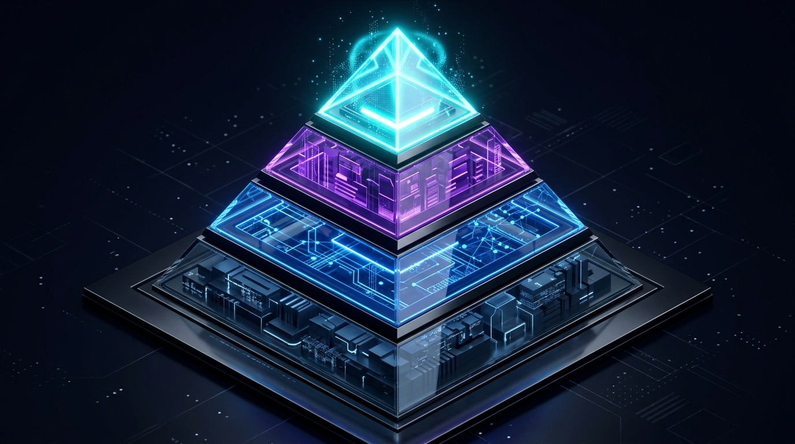

SS&C WorkHQ en Acción


De RPA a la Orquestación Inteligente
Evolución de las tecnologías de automatización, panorama competitivo global y el nuevo paradigma con SS&C WorkHQ.
Agenda de la Sesión
- 01 La Evolución Tecnológica: Las 4 eras de la automatización del trabajo.
- 02 Panorama del Mercado: Posicionamiento de plataformas clave.
- 03 Tendencias & Abstracción: Macrotendencias y la Pirámide de Orquestación.
- 04 Deep-Dive SS&C: La ruta de Blue Prism hacia SS&C WorkHQ.
- 05 Conclusiones & Hands-On: Siguientes pasos hacia el laboratorio.
Dirigido a
Líderes de Automatización, Transformación Digital, Ingenieria de Procesos, TI y Operaciones
Objetivo Clave
Entender el alcance de SS&C WorkHQ como plataforma de orquestación inteligente y dominar su ecosistema unificado
Hands-on Lab en el entorno de SS&C WorkHQ
Las 4 Eras de la Automatización del Trabajo
De macros estáticas a ecosistemas autónomos y orquestación multi-agente.
Scripting, Excel Macros y Automatizaciones de Escritorio
Herramientas tácticas aisladas para resolver tareas individuales de forma local en el puesto de un usuario.
Tecnología Clave
VBA, VBScript, Bash / Shell, Batch
Limitación Principal
Cero trazabilidad, fragilidad, elevado mantenimiento y falta de gobernanza centralizada
Alcance
Nivel de tarea personal
RPA Tradicional Centrado en Bots (Bot-Centric)
Replicación exacta de acciones humanas de pantalla (screen scraping, clicks) ejecutadas por Digital Workers seguros en servidores dedicados.
Tecnología Clave
Blue Prism Enterprise, UiPath, Automation Anywhere
Enfoque
Procesos repetitivos estructurados (Basados 100% en reglas deterministas)
Desafío
Cuellos de botella cuando hay excepciones, datos no estructurados o tareas humanas
Hyperautomation & Automatización Inteligente (IA)
Convergencia de RPA con inteligencia artificial básica: OCR/IDP para documentos, NLP para clasificación de mails y Process Mining para descubrimiento.
Tecnología Clave
RPA + IDP + Computer Vision + Process Mining + Chatbots
Logro
Procesamiento de documentos no estructurados y análisis de logs operacionales
Limitación
Múltiples plataformas desconectadas que requirieron integraciones complejas
Orquestación Inteligente & Agentes Autónomos de IA
Plataformas unificadas que orquestan flujos end-to-end integrando Humanos + Bots RPA + Agentes Generativos IA + BPM + Process Intelligence.
Tecnología Clave
SS&C WorkHQ, N8N, UiPath Maestro, AA Mozart
Enfoque
Orquestación orientada al resultado del proceso completo (Outcome-driven)
Diferenciador
Gobernanza centralizada, autorreparación y colaboración fluida Hombre-Máquina
Posicionamiento del Mercado
Evolución de las suites de automatización enterprise de líderes de RPA a plataformas integradas de Orquestación.
Unificación de Blue Prism RPA, Chorus BPM y Agentes IA con gobernanza de nivel financiero.
Fuerte en desarrollo y automatización de interfaz con capacidades crecientes de IA.
Plataforma nativa Cloud enfocada en Document Automation y Process Reasoning.
Alta penetración en escritorio y Office 365 con Copilot Studio.
Orquestador técnico de nodos y APIs flexible, ideal para integración de LLMs, webhooks y agentes autónomos (Self-Hosted/Cloud).
| Plataforma | Modelo Core | Orquestación HITL | Integración Agentes IA | Seguridad / Compliance |
|---|---|---|---|---|
| SS&C WorkHQ | Orquestación Híbrida Unificada | Nativo HITL | Nativo Multi-Agente | Nivel Financiero Tier-1 |
| UiPath | RPA + Suite Modular | Action Center | Autopilot / IXP | Enterprise Standard |
| Automation Anywhere | Cloud Automation Platform | AARI (Co-pilot) | AI Agent Studio | Cloud SOC2 |
| MS Power Automate | Low-Code Desktop/Cloud | Power Apps/Approvals | Copilot Studio | Entra ID Standard |
| n8n | Orquestación Node-Based / APIs | Webhooks / Triggers | AI Agent Nodes | Self-Hosted Custom |
Tendencias Clave que Impulsan la Orquestación
Los pilares tecnológicos que definen el futuro de la automatización.
Agentic Process Automation (APA)
Evolución de los bots pasivos hacia Agentes de IA Autónomos capaces de planificar, iterar y razonar para completar metas de negocio complejas.
Process Intelligence Integrado
Descubrimiento continuo y simulación de procesos mediante analítica de logs en tiempo real para identificar ineficiencias antes de automatizar.
Colaboración Híbrida (Human-in-the-Loop)
Interfaces unificadas donde los humanos supervisan, aprueban e instruyen a la fuerza laboral digital sin fricción de context-switching.
Gobernanza y IA Responsable
Guardrails estrictos, auditoría end-to-end y control de accesos para prevenir sesgos o alucinaciones de modelos de lenguaje en operaciones críticas.
La Orquestación como Nueva Capa de Abstracción
De scripts y bots aislados a una plataforma superior de gobierno que unifica RPA, criterio humano (HITL) e IA Agéntica.

Principio de Abstracción: Las capas superiores no destruyen a las inferiores: las orquestan. WorkHQ no reemplaza al RPA ni a las APIs; es el director que asigna cada tarea al actor óptimo (Bot, Persona o Agente IA).
Orquestación Inteligente Enterprise
Gobernanza End-to-EndPlataforma integral que coordina y gobierna los 3 pilares del trabajo moderno en un solo flujo:
Automatización Low-Code & Tareas de UI
Pantalla & DocsHerramientas visuales para emular la interacción humana en interfaz y captura documental:
Frameworks & Automatización por APIs
Datos & EventosConectores estandarizados, pipelines de integración continua y colas de mensajes:
Automatización por Código & Scripts Locales
Hard-CodedScripts manuales de puesto individual; alta fragilidad visual y nula gobernanza central:
Evolución SS&C: De Blue Prism Enterprise a SS&C WorkHQ
La integración estratégica de los líderes de RPA y BPM en una sola plataforma de orquestación.
Blue Prism Enterprise
Creó la categoría RPA Enterprise con arquitectura segura de Digital Workers.
Chorus, Interact, Decipher & Más
Incorporación de herramientas adicionales a BPE (como Chorus BPM, Interact, Decipher IDP, etc.) ampliando la automatización transaccional.
SS&C WorkHQ
Plataforma única de Orquestación Inteligente, Process Mining y Agentes IA.
Arquitectura Unificada de SS&C WorkHQ
Hacé click en cada componente para explorar su función en el ecosistema:
Integración con Ecosistema Corporativo
Integración fluida y rápida con el ecosistema de aplicaciones corporativas a través de conectores simples y estandarizados, facilitando la interoperabilidad con sistemas legados, ERPs, CRMs y plataformas Cloud.
- Integración nativa con el ecosistema de aplicaciones corporativo.
- Conectores simples y estandarizados de rápida implementación.
Digital Workers & Automation Orchestrator
Los Digital Workers son robots de software seguros que ejecutan tareas repetitivas en sistemas legados, mainframe, web y ERPs. El Automation Orchestrator es el motor central de gestión que programa, administra las colas de trabajo, asigna tareas y balancea la carga de la fuerza laboral digital en tiempo real con trazabilidad y auditoría.
- Digital Workers: Ejecución transaccional automatizada y segura.
- Automation Orchestrator: Control centralizado, gestión de colas y orquestación de capacidad.
Cognitive AI Agents & AI Gateway
Los Agentes de IA ejecutan tareas cognitivas complejas, razonan en lenguaje natural e interpretan documentos. El AI Gateway proporciona la capa centralizada de gobernanza y seguridad que gestiona el acceso a modelos LLM, administra costos y aplica guardrails estrictos contra alucinaciones y fuga de información sensible.
- Agentes de IA: Razonamiento autónomo, procesamiento multimodal e IDP.
- AI Gateway: Gobernanza centralizada de LLMs, control de costos y guardrails de seguridad.
Human-in-the-Loop (HITL)
Supervisión, colaboración e interacción humana continua en los flujos de trabajo, permitiendo a los equipos tomar decisiones, validar acciones y gestionar excepciones en tiempo real.
- Colaboración fluida Hombre-Máquina en procesos críticos.
- Gestión de excepciones e interacción en tiempo real.
Conclusiones Clave hacia el Hands-On
Preparados para liderar la evolución hacia SS&C WorkHQ.
WorkHQ como director de orquesta
Los Digital Workers de Blue Prism siguen siendo una pieza clave para la ejecución transaccional, pero requieren la orquestación de WorkHQ para integrarse con la IA y el trabajo humano.
De Silos a Procesos End-to-End
El valor de negocio moderno proviene de reducir el tiempo total de ciclo de procesos completos, no solo de automatizar clicks individuales.
Gobernanza Enterprise Primero
Escalar Agentes IA requiere la seguridad, auditoría y control financiero que SS&C ofrece de forma nativa en WorkHQ.
¿Listo para la práctica?
En el siguiente módulo entraremos al entorno de laboratorio de SS&C WorkHQ para entender su alcance, módulos y repasar un caso de uso.